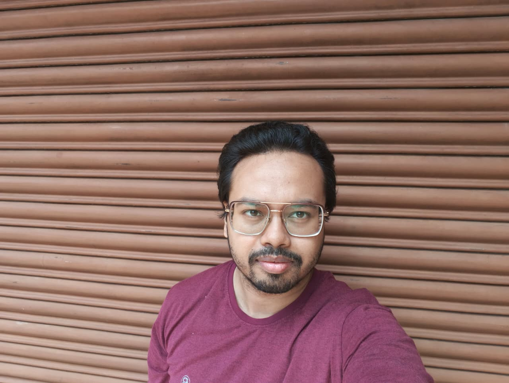

I hold a Master of Science degree (M.Sc.) in Biotechnology from The Assam Kaziranga University, where my dissertation focused on isolating and characterizing endophytic microorganisms from Curcuma amada (mango ginger). I've complemented this with certified internships in toxicology and pharmaceutical biotechnology, along with certifications in molecular docking and stem cell research. On the computational side, I've built Python-based bioinformatics projects covering DNA sequence analysis, transcription/translation simulation, and population genetics using Hardy-Weinberg equilibrium — alongside cheminformatics work in ADMET prediction and molecular docking using SwissADME, ProTox, and SwissDock. As a fresher, I bring hands-on research experience across biotechnology, bioinformatics, and cheminformatics to every project. I also do protein folding through Foldit, a UW-developed platform used in real structural biology research. I'm actively looking to grow into research and R&D roles, particularly in genetic engineering, bioinformatics, computational biology, cheminformatics, and various other areas of biotechnology R&D, as the next step in my career.
